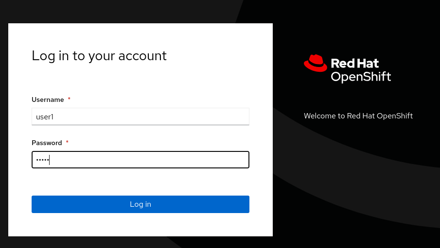
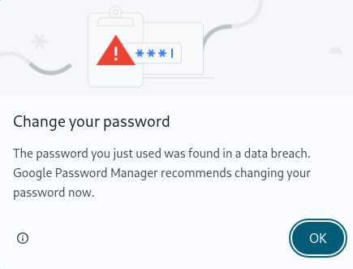
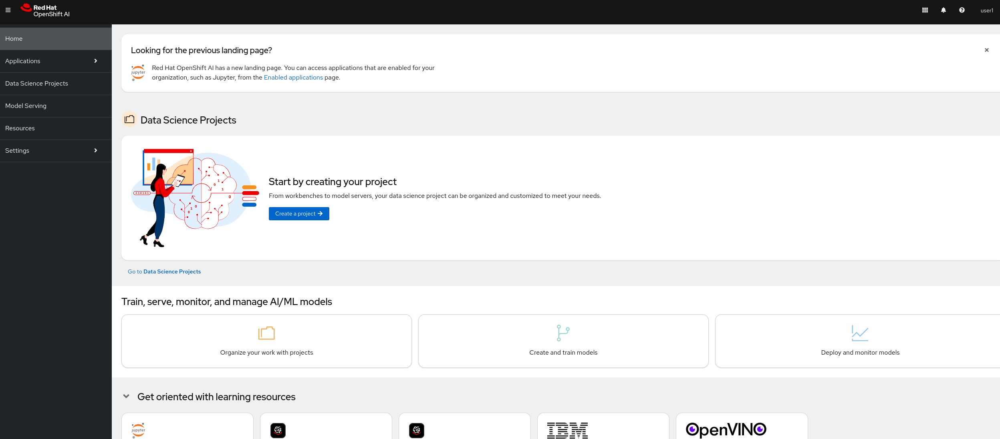

Acceder a OpenShift AI
Para la realización de este laboratorio, se ha provisionado un cluster de OpenShift, con OpenShift AI desplegado.
Cada persona que realice este lab, tendrá un usuario propio con el que podrá trabajar.
Datos del entorno
En una nueva ventana, accede a la consola de OpenShift y haz clic en lab-users para iniciar sesión con las siguientes credenciales:
-
Usuario:
user1 -
Contraseña:
user1

-
Dado que la contraseña es simple, el navegador puede que lance el siguiente mensaje:

-
Se puede ignorar el mensaje, y continuar con el lab. Una vez autenticado, se mostrará la siguiente consola:

¡Enhorabuena! Ya estás conectado a OpenShift AI y listo para empezar el laboratorio.